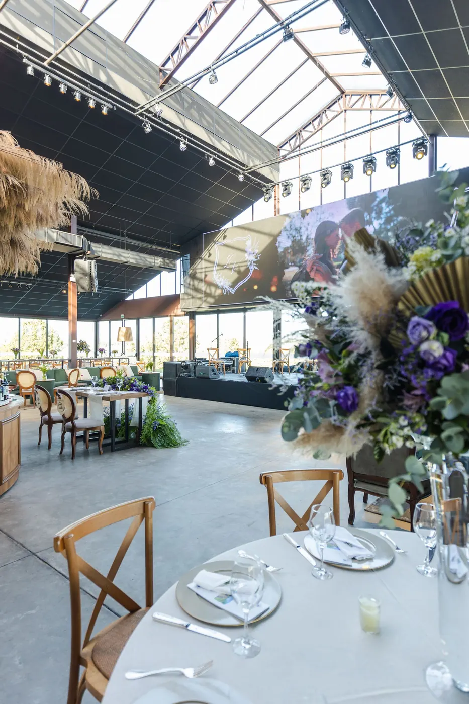
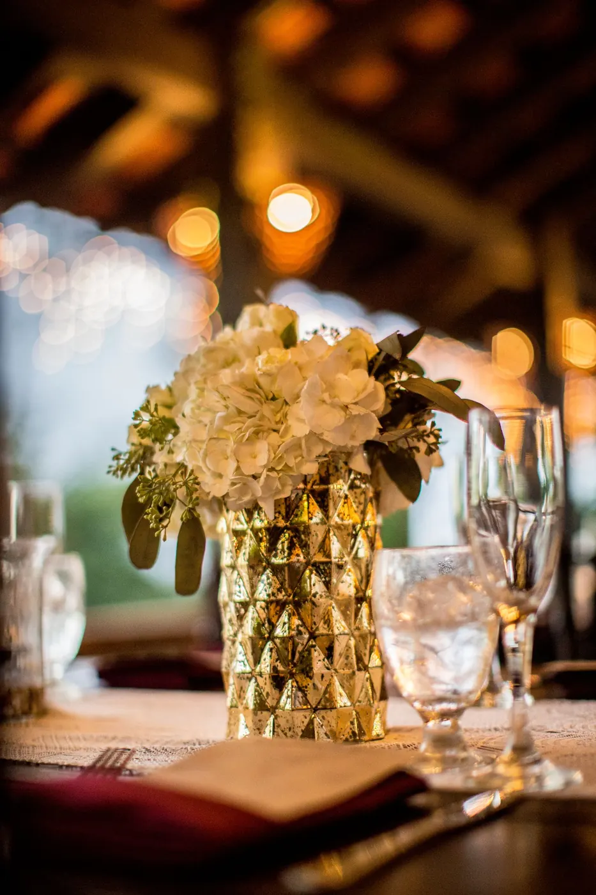
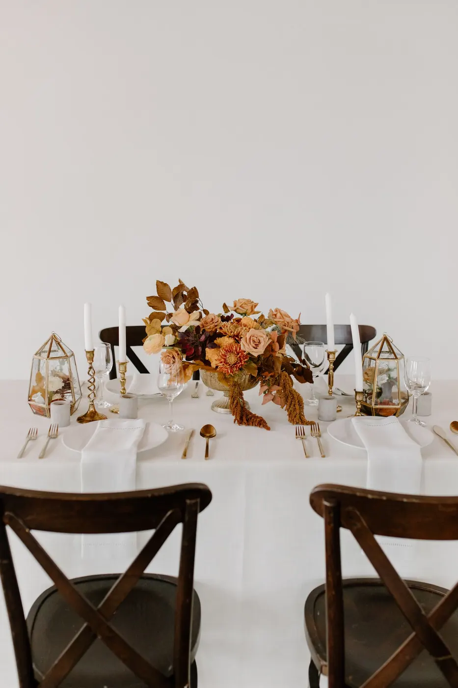

01
Eventos de empresa
Presentaciones, jornadas, congresos y cenas de equipo con una imagen cuidada.
Diseñamos decoraciones florales que añaden elegancia y sofisticación a cualquier evento. Porque los detalles son lo que hace que un encuentro se recuerde.
 Imagen de banco · pendiente de foto original
Imagen de banco · pendiente de foto original
«Diseñamos decoraciones florales que añaden elegancia y sofisticación a cualquier evento.»
Una recepción cuidada, una mesa bien vestida o un escenario con flores transmiten atención al detalle. Adaptamos cada propuesta a la imagen de tu empresa o al espíritu de tu celebración, al espacio y al número de invitados.
Del encuentro más íntimo a la gran celebración. Toca las imágenes para ampliarlas.
Presentaciones, jornadas, congresos y cenas de equipo con una imagen cuidada.

Arreglos de bienvenida y detalles florales para abrir tu negocio con buen pie.

Centros protagonistas, velas y flor para mesas que invitan a quedarse.

Tonos suaves y composiciones delicadas para celebraciones familiares.

Cumpleaños redondos, aniversarios y reuniones especiales con personalidad propia.
Detalles para recepciones, despachos o regalos a clientes y equipos.
Cuéntanos tipo de evento, fecha, lugar, número de mesas o piezas y estilo deseado.
Preparamos una idea floral adaptada a tu imagen, al espacio y al presupuesto.
Ajustamos los detalles, cerramos cantidades y confirmamos el encargo.
Las piezas se preparan con flor fresca para que luzcan impecables ese día.
La entrada y la recepción marcan el tono. Unas flores bien elegidas dicen «bienvenido» sin palabras.
Podemos trabajar con los colores de tu marca o de tu celebración para que todo resulte coherente.
Los invitados olvidan el menú, pero recuerdan cómo se sintieron en un espacio bonito.
Tipo de evento, fecha, ubicación, número de piezas o mesas, estilo y colores deseados. Con eso la floristería puede preparar una propuesta a medida.
Sí. Es una de las mejores formas de integrar la decoración floral con la identidad de la marca.
Podemos preparar ramos, plantas o packs para regalar. Consulta cantidades y plazos por WhatsApp.
Cuanto antes, mejor, sobre todo en fechas señaladas o si se necesitan muchas piezas. Los plazos se confirman directamente con la floristería.
Fecha, lugar, número de invitados y estilo. El mensaje de WhatsApp ya indica que es para un evento.